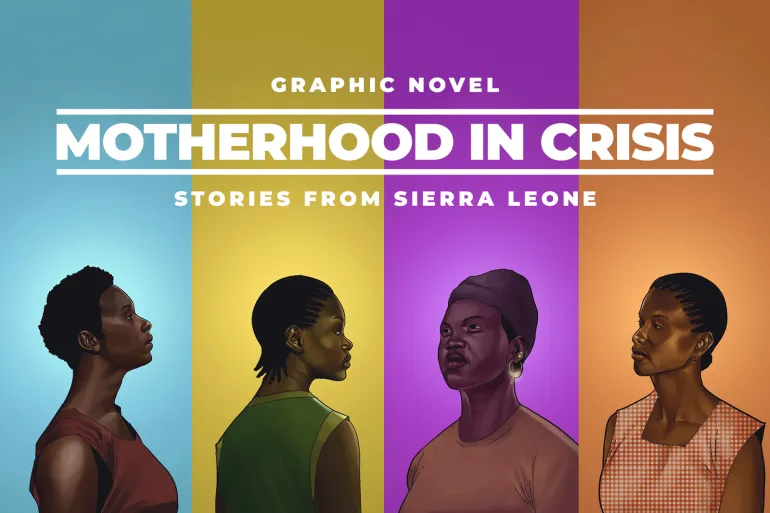

This was a surprising read as it brought to my attention on how little resources were available to women in Africa. In Memuntu’s case it was awful that the traditional women had lied to her that she was a nurse. This broke her trust and left me in shock. After reading the cartoon and learning about her story I was really happy that the center helped her recover. They were able to learn her past experiences and give her the right surgery that helped her body heal. The center was experienced in their field and was able to help Memuntu safely deliver her baby. In Heela’s case it was shocking because it was a case that occurred so much in teen children. The children heard stories similar to Heela’s and had little information on what to do. Heela had been taken with good care by the counsellor. The counsellor's video at the end of the story was really informative as it showed how these cases have progressed. They have been able to spread awareness by going to schools and teaching the students on prevention and where to go. In Kadiatu’s case it was an informative read. People in her village thought that the devil was the one who took her child away and started rumors about Kadiatu. The village traditional healer did not speak to women but yet spoke to the men that had little knowledge about what was going on. This point infuriated me. The women had little power to have a say. Women in our society do not have access to justice in the system. They lack support from those around them. In the story of Tetteh she was left to fight for her case alone without support from people around her. Women in society lack the knowledge and power in the criminal justice system. In her case she was determined to fight for her rights and freedom because she was able to access help while being in prison.